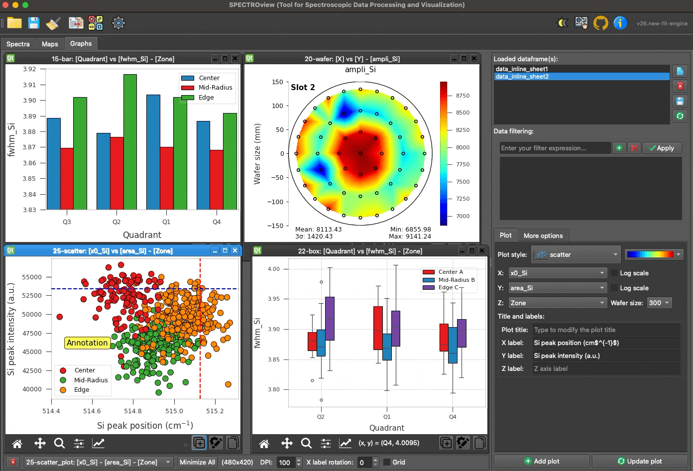
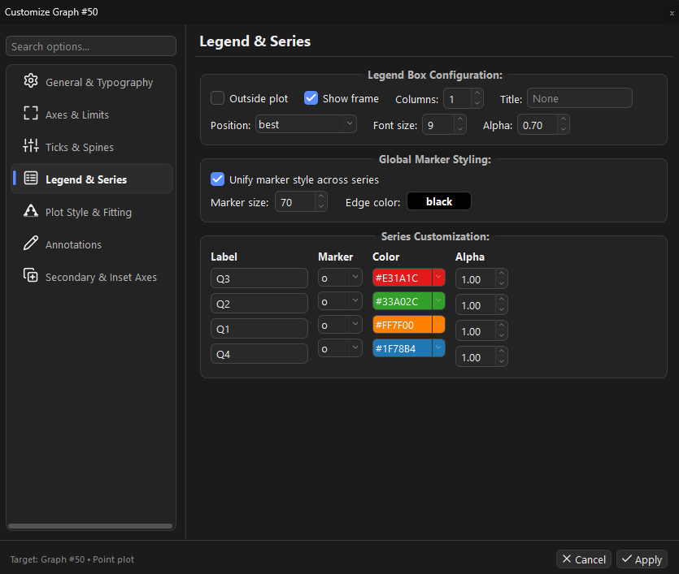
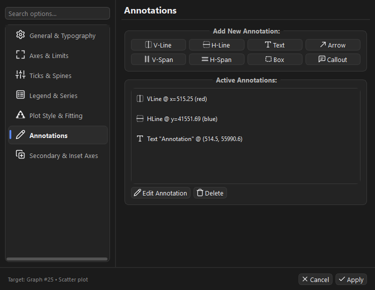

Рабочая область «Графики»
Рабочая область: Графики¶
Рабочая область Графики (Graphs) полностью посвящена визуализации данных и разработана с особым акцентом на простоту, быстродействие и гибкость настройки.

Обзор интерфейса рабочей области «Графики».
1. Загрузка данных¶
Наборы данных можно передавать напрямую из рабочих областей Спектры (Spectra) и Карты (Maps) или импортировать из внешних файлов Excel/CSV. Все доступные наборы данных динамически отслеживаются и отображаются в виджете списка наборов данных.

Четыре доступные служебные кнопки позволяют:
- View: просмотреть таблицу данных во встроенном окне.
- Удалить (Delete): удалить набор данных из рабочей области.
- Сохранить (Save): экспортировать набор данных в формат Excel или CSV.
- Refresh: динамически перезагрузить файл CSV/Excel, если он был изменён извне.
2. Добавление или обновление графика¶
- Выберите целевой набор данных в списке.
- Укажите подходящие столбцы для осей X, Y и Z с помощью выпадающих списков.
- Выберите нужный тип графика (доступные типы: рассеяние (
scatter), точки (point), столбцы (bar), ящик с усами (box), линия (line), линия тренда (trendline), гистограмма (histogram), 2D-карта (2Dmap), пластина (wafer)). - Задайте подписи графика, пределы осей и диаметр пластины (если применимо).
- Нажмите Добавить график (Add plot), чтобы построить визуализацию.

Демонстрация добавления нового графика или обновления существующего.
3. Общая панель инструментов графиков¶
На нижней панели рабочей области собраны все глобальные элементы управления и одна общая панель инструментов графика, которая всегда действует на текущее активное окно графика. Чтобы сделать график активным, нажмите на него или выберите его в выпадающем списке Активный график (Active plot) на боковой панели (сразу над кнопками Добавить график / Обновить график (Update plot)).
| Элемент управления | Описание |
|---|---|
| Удалить все (Delete all) | Удаляет все графики из рабочей области. |
| Свернуть все (Minimize all) | Сворачивает все окна графиков. |
| Отменить (Undo) / Redo | Перемещает назад/вперёд по истории изменений рабочей области (Ctrl+Z / Ctrl+Shift+Z). |
| Compose Figure | Объединяет несколько открытых графиков в один многопанельный рисунок для экспорта. |
| Home / Pan / Zoom / Subplots | Стандартная навигация Matplotlib: возврат к исходному виду, панорамирование, масштабирование прямоугольником или настройка полей подграфиков. |
Совет: При изменении размера или перемещении окна графика перетаскиванием его границы или строки заголовка сначала отображается контур. График перерисовывается один раз — уже в новом размере — после отпускания кнопки мыши. Это обеспечивает плавность работы даже с крупными графиками. Аналогично, во время панорамирования поля вокруг осей остаются фиксированными и пересчитываются после отпускания кнопки мыши.
Вертикальный разделитель отделяет элементы управления самого активного графика — они всегда выровнены по правому краю окна:
| Элемент управления | Описание |
|---|---|
| Replicate | Создаёт дубликат активного графика. |
| Customize | Открывает диалоговое окно Customize Graph Dialog для активного графика (Ctrl+E, см. ниже). |
| Копировать (Copy) | Копирует рисунок активного графика в буфер обмена как изображение (Ctrl+C). |
| Export | Нажмите для экспорта активного графика в файл. Удерживайте Ctrl + клик, чтобы экспортировать сразу все открытые графики. |
| Style menu (🎨) | Сохранение и применение стиля, копирование и вставка стиля (Ctrl+V для вставки), сброс к исходному виду или назначение текущего стиля стилем по умолчанию для новых графиков. |
Примечание: перечисленные выше сочетания клавиш
Ctrl+Z,Ctrl+Shift+Z,Ctrl+C,Ctrl+VиCtrl+Eработают только тогда, когда активна вкладка Графики — они не мешают выполнению тех же комбинаций в других частях приложения (например, при вводе текста в полях).
4. Настройка графика¶
Вы можете быстро изменить подписи осей и заголовок графика через боковую панель (Right Panel). Нажмите кнопку Обновить график, чтобы мгновенно применить изменения:

Настройка выбранного графика через Right Panel. Нажмите кнопку Обновить график, чтобы применить изменения.
Для расширенной настройки нажмите кнопку Customize (⚙), чтобы открыть диалоговое окно Customize Graph Dialog (Ctrl + E). Оно выполнено в современном двухпанельном интерфейсе по образцу «Настроек» и оснащено глобальным поиском по всем параметрам в реальном времени, адаптивной навигацией по категориям слева, а также подсветкой и автоматической прокруткой к найденному параметру внутри семи модульных категорий:
- Общие и типографика (General & Typography): тема рисунка (светлая/тёмная), линии сетки, поворот подписей оси X, размеры шрифта (заголовок, подпись оси, подписи делений, цветовая шкала) и интеллектуальная сортировка данных.
- Оси и пределы (Axes & Limits): пределы осей с интерактивными ползунками диапазона (вверху), масштабы основных осей X/Y/Z (линейный, логарифмический, Symlog, центрированный), числовой и категориальный типы данных, инверсия осей и диапазоны разрыва осей.
- Ticks & Spines: направление делений, предустановленные форматы подписей делений, дополнительные деления (сверху, снизу, слева, справа) и видимость линий рамки осей.
- Legend & Series: размещение блока легенды (внутри/снаружи), рамка, число столбцов, заголовок, размер шрифта, прозрачность альфа, положение, общий стиль маркеров и выровненная по левому краю таблица оформления по сериям.
- Стиль графиков и аппроксимация (Plot Style & Fitting): специализированные параметры типов графиков (соединение точек, разнесение совпадающих точек, статистика пластины), унифицированные настройки планок ошибок (отображение, тип статистики, ширина засечек), полиномиальная аппроксимация линии тренда с опорными точками и таблицами уравнений в реальном времени, а также интервалы гистограммы и кривые KDE.
- Annotations: визуальные аннотации на графике (вертикальные и горизонтальные линии, текст, стрелки, вертикальные и горизонтальные полосы, прямоугольники, выноски) с интерактивным перетаскиванием по холсту и модальным редактированием.
- Вторые оси и врезка (Secondary & Inset Axes): дополнительные спаренные оси (Y2, Y3, X2 с отдельными подписями, пределами, логарифмической шкалой, цветами и маркерами) и увеличенная врезка с соединительными линиями.
Все изменения на всех вкладках применяются одновременно единой кнопкой Применить (Apply) в нижней части диалогового окна или отменяются кнопкой Отмена (Cancel).
4.1 «Оси и пределы», Ticks & Spines и «Вторые оси и врезк໶

Настройка осей в диалоговом окне Customize Graph Dialog.
Категории Оси и пределы, Ticks & Spines и Вторые оси и врезка управляют масштабированием осей, типами данных, пределами, оформлением делений и рамки, разрывами осей, врезками (увеличенными областями) и дополнительными спаренными осями. Размеры шрифта для заголовков, подписей и делений находятся в категории Общие и типографика.
Свойства осей (Оси и пределы)¶
Настройте масштаб и тип данных для каждой оси независимо с помощью выпадающих меню:
| Параметр | Варианты | Описание |
|---|---|---|
| X / Y axis Scale | Линейный (Linear), Логарифмическая (Logarithmic), Symlog |
Переключает ось между линейной, логарифмической и симметричной логарифмической шкалами. Логарифмическая шкала применяется только в том случае, если исходные данные являются числовыми. |
| X / Y axis Data type | Авто (Auto), Категория (Category), Числовые (Numerical) |
Определяет интерпретацию значений по оси. Авто (по умолчанию): приложение автоматически определяет оптимальный тип — числовой, если 100 % данных составляют числа, иначе категориальный. Категория: принудительно использует категориальную индексацию. Числовые: принудительно задаёт непрерывную числовую шкалу. |
| Z axis Scale (только для типов «пластина» / «2D-карта») | Линейный, Логарифмическая, Центрированная (Centered) |
Задаёт нормализацию цветовой шкалы тепловой карты. Логарифмическая сжимает широкий диапазон значений (возвращается к линейной, если данные не строго положительны). Центрированная привязывает среднюю точку цветовой палитры к введённому значению Центр (Center value) — идеально подходит для расходящихся данных, например механических напряжений или деформаций вокруг 0. |
Примечание: при использовании типа данных Числовые ось принимает истинную математическую шкалу, в которой интервалы отражают реальные значения данных. При использовании Категория каждое уникальное значение располагается равномерно независимо от его числовой величины.
Задание пределов осей (Оси и пределы)¶
Задайте видимый диапазон каждой оси (X, Y, Z) вручную, указав значения min и max:
| Элемент управления | Описание |
|---|---|
| X / Y / Z axis limits | Введите минимальное и максимальное значения, чтобы ограничить видимый диапазон. Оставьте поле счётчика незаполненным (в нём отображается текущее реальное значение графика серым цветом), чтобы сохранить автоматический расчёт этой границы. |
| Считать пределы с графика (Get current limits from plot) | Считывает текущие видимые пределы с графика и заполняет поля. Удобно использовать как отправную точку перед тонкой настройкой. |
| Clear limits | Сбрасывает все пределы осей обратно в автоматический режим (без ограничений). |

Настройка пределов осей выбранного графика.
Внешний вид осей (Ticks & Spines)¶
| Элемент управления | Описание |
|---|---|
| Minor ticks (X Снизу (Bottom)/Сверху (Top), Y Слева (Left)/Справа (Right)) | Независимо включает дополнительные деления на каждой из четырёх границ графика. По умолчанию дополнительные деления автоматически включены только для осей, представляющих числовые значения (например, X и Y для графиков рассеяние, линия и гистограмма, Y для столбцы, ящик с усами и точки), и скрыты на категориальных осях или картах. Пользователи могут включать или отключать их для любой оси отдельно. |
| Show spines (Сверху/Справа/Снизу/Слева) | Независимо переключает видимость каждой из четырёх линий рамки графика. |
| Направление делений (Tick direction) | По умолчанию (Default), Внутрь (In), Наружу (Out) или Обе стороны (In & Out). |
| Формат подписей делений (Tick label format) | Авто, Integer, 1-decimal, 2-decimal или Scientific. |
Разрыв оси (Оси и пределы — бета)¶
Создаёт визуальный разрыв на оси, чтобы пропустить неинформативный интервал и сосредоточиться на значимых областях данных:
| Элемент управления | Описание |
|---|---|
| Разрыв оси X (X-axis break) | Включает разрыв и задаёт диапазон from / to для пропуска по оси X. |
| Разрыв оси Y (Y-axis break) | Включает разрыв и задаёт диапазон from / to для пропуска по оси Y. |
Примечание: эта функция находится в стадии бета-тестирования. Разрывы осей лучше всего работают с линейными шкалами.
Оси врезки / увеличения (Вторые оси и врезка)¶
Отрисовывает небольшую увеличенную область графика внутри основного поля построения:
| Элемент управления | Описание |
|---|---|
| Enable inset axes | Включает или отключает отображение врезки. |
| Position (x0, y0) / Size (w, h) | Положение и размер рамки врезки в долях области построения (0–1). |
| X / Y limits | Диапазон данных, приближаемый во врезке. Оставьте серые значения по умолчанию для автоматического подбора границ. |
| Show zoom indicator | Рисует соединительные линии от рамки врезки к увеличенной области на основном графике. |
Примечание: оси врезки и разрыв оси взаимоисключающие — включение одной функции отключает другую.
Вторые оси (Вторые оси и врезка)¶
Позволяет построить дополнительные столбцы по оси Y (или второй столбец по оси X) с независимыми шкалами — по одной строке на ось (Y2, Y3, X2). Строка активируется, как только этой оси назначен столбец, и позволяет задать Подпись (Label), пределы Мин/Макс (Min/Max), переключатель Лог. шкала (Log scale), Цвет (Color) и Маркер (Marker).
4.2 Legend & Series¶

Категория Legend & Series в диалоговом окне Customize Graph Dialog.
Категория Legend & Series позволяет настроить внешний вид и расположение легенды графика, а также цвета, маркеры, прозрачность и толщину линий для каждой серии данных.
Блок легенды и оформление серий¶
| Элемент управления | Описание |
|---|---|
| Put legend box outside | Перемещает рамку легенды правее области построения, чтобы она не перекрывала данные. Снимите флажок, чтобы разместить легенду внутри графика. |
| Unify marker size / edge color | Включено по умолчанию: один элемент управления размером маркера и цветом контура в верхней части применяется ко всем сериям сразу. Снимите флажок, чтобы открыть столбцы индивидуального размера маркера и цвета контура в таблице ниже (для графиков рассеяние, точки и линия тренда), позволяя настроить каждую серию отдельно. |
| Подпись | Изменяет отображаемое имя каждой серии данных в легенде. |
| Маркер | Выбирает символ маркера для каждой серии (доступно для графиков точки и рассеяние). |
| Цвет | Выбирает цвет для каждой серии из предопределённой палитры. |
| Прозрачность (Alpha) / Толщина (Line width) | Непрозрачность для каждой серии и толщина линии для типов графиков, отображающих кривую (линия, линия тренда или точки с включённым соединением точек). |
Совет: блок легенды можно перетаскивать мышью в любое место прямо на холсте графика.

Настройка легенды и цветов выбранного графика.
Стиль легенды¶
| Элемент управления | Описание |
|---|---|
| Столбцы (Columns) / Frame / Заголовок (Title) / Размер шрифта (Font size) / Прозрачность / Позиция (Position) | Компоновка и внешний вид самой рамки легенды. |
4.3 Annotations¶

Категория Annotations в диалоговом окне Customize Graph Dialog.
Категория Annotations позволяет накладывать на график опорные линии, фигуры и текстовые подписи.
Добавление аннотаций¶
Нажмите одну из кнопок в верхней части, чтобы добавить аннотацию в центр текущей области просмотра:
| Кнопка | Описание |
|---|---|
| Верт. линия (V-Line) / Гориз. линия (H-Line) | Добавляет вертикальную или горизонтальную опорную линию (по умолчанию: красная/синяя, штриховая). |
| Текст (Text) | Добавляет текстовую подпись со скруглённым фоновым блоком (по умолчанию: жёлтый фон). |
| Стрелка (Arrow) | Добавляет стрелку, соединяющую две точки. |
| Верт. полоса (V-Span) / Гориз. полоса (H-Span) | Добавляет закрашенную вертикальную или горизонтальную полосу между двумя значениями. |
| Прямоугольник (Box) | Добавляет закрашенный или контурный прямоугольник. |
| Выноска (Callout) | Добавляет текстовую подпись со стрелкой-указателем к конкретной точке данных. |
Управление аннотациями¶
Все текущие аннотации перечислены в списке под кнопками. Выберите нужную аннотацию, чтобы нажать Edit или Удалить. Диалог редактирования каждого типа аннотации предоставляет соответствующие свойства: цвет, стиль и толщину линии/полосы/прямоугольника; текст, размер шрифта, цвет и фон; координаты концов стрелки и точку привязки выноски.
Совет: аннотации можно перетаскивать мышью прямо на холсте графика. Их положение сохраняется при сохранении рабочей области. Двойной щелчок по аннотации на холсте также открывает окно её редактирования.

Настройка положения и внешнего вида аннотаций на выбранном графике.
4.4 «Общие и типографика» и «Стиль графиков и аппроксимация»¶

Типографика, сортировка и параметры, специфичные для типа графика, в Customize Graph Dialog.
Категории Общие и типографика и Стиль графиков и аппроксимация объединяют общие настройки типографики, темы и сортировки данных со специальными элементами управления для конкретных типов графиков (планки ошибок, линии тренда и гистограммы).
Параметры стиля графика и планки ошибок (Стиль графиков и аппроксимация)¶
Эти элементы управления адаптируются к активному типу графика:
| Параметр | Применимый тип | Описание |
|---|---|---|
| Join data points | точки | Соединяет средние значения между категориями отрезками линий. |
| Dodge overlapping points | точки | Смещает перекрывающиеся цветовые группы по горизонтали во избежание наложения. |
| Dodge overlapping points | рассеяние | Смещает перекрывающиеся цветовые группы по горизонтали на диаграммах рассеяния. |
| Show statistics summary | пластина | Накладывает сводку статистики (среднее, СКО, мин., макс., однородность) на карту пластины. |
| Show error bars | столбцы | Отображает планки ошибок над каждым столбцом. |
| Error bar type | точки, линия, столбцы | СКО (Std. Dev.), Ст. ошибка (Std. Error), 95% ДИ (95% CI) или Нет (None) (набор вариантов зависит от типа графика). |
| Ширина засечек (Cap size) | точки, линия, столбцы | Ширина горизонтальных засечек на концах планок ошибок. |
Отображение, сетка и размеры шрифта (Общие и типографика)¶
| Параметр | Применимый тип | Описание |
|---|---|---|
| Тема рисунка (Figure theme) | все типы | Цветовая схема рисунка: Светлая (Light) или Тёмная (Dark). |
| Поворот подписей X (X label rotation) | все типы | Поворачивает подписи делений оси X (0–90°). |
| Линии сетки (Show grid lines) | все типы | Включает или отключает фоновые линии сетки на графике. |
Задайте размер шрифта в пунктах независимо для параметров Заголовок, Подпись оси (Axis label), Деления (Tick label) и Цветовая шкала (Colorbar) (по умолчанию: 12/12/9/10). Параметр Цветовая шкала управляет размером текста делений на цветовых шкалах графиков пластина и 2D-карта. Для подзаголовка отдельной настройки размера нет — он всегда отображается на 2 pt меньше заголовка; его текст редактируется на боковой панели, а не здесь.
Сортировка данных (Общие и типографика)¶
Управляет порядком отображения категорий и элементов легенды:
| Параметр | Описание |
|---|---|
| Включить интеллектуальную сортировку данных (Enable intelligent data sorting) | Если флажок установлен, исходный набор данных детерминированно сортируется перед построением графика (рекомендуется). Если флажок снят, график строго сохраняет исходный порядок строк набора данных. |
| Сортировать по (Sort by) | Когда сортировка включена, выберите целевую ось сортировки: - Z (цветовые значения) (Z (hue values)): сортирует категории в первую очередь по группе легенды (по умолчанию). - Значения X (X values): сортирует категории по оси X. - Значения Y (Y values): сортирует данные по возрастанию метрики Y. |
Примечание: отключение интеллектуальной сортировки полезно, если ваш набор данных уже предварительно отсортирован и вы хотите явно сохранить эту последовательность. При изменении настроек сортировки цвета легенды автоматически сбрасываются к последовательности палитры по умолчанию для сохранения согласованной цветовой схемы.
Параметры линии тренда (Стиль графиков и аппроксимация)¶
Отображаются только при выборе типа графика линия тренда:
| Параметр | Описание |
|---|---|
| Порядок полинома (Polynomial order) | Задаёт степень аппроксимирующего полинома (1 = линейная, 2 = квадратичная, …, до 10). |
| Опорная точка (Anchor point) | Фиксирует прохождение аппроксимирующей кривой через заданную точку. Выберите Origin (0, 0) или введите custom (X₀, Y₀). |
| Уравнения (Fit equation(s)) | Отображает вычисленное уравнение и значение R² для каждой цветовой группы в таблице. Нажмите Копировать, чтобы экспортировать таблицу в формате с разделителями-табуляциями (удобно вставлять прямо в Excel). |
Параметры гистограммы (Стиль графиков и аппроксимация)¶
Отображаются только при выборе типа графика гистограмма:
| Параметр | Описание |
|---|---|
| Bins | Число интервалов гистограммы (2–500, по умолчанию: 20). |
| Overlay KDE curve | Налагает сглаженную кривую ядерной оценки плотности (KDE) поверх гистограммы. |
| Стиль заливки (Fill style) | Выберите Сплошная (Filled) для закрашенных столбцов (по умолчанию) или Step (только контур). |
Шкала цветовой палитры (пластина / 2D-карта): нормализация цветовой шкалы (Линейный / Логарифмическая / Центрированная) находится в категории Оси и пределы под названием Z axis Scale.
5. Фильтрация данных¶
Вы можете динамически фильтровать отображаемые данные, применяя булевы логические выражения в поле Filter в формате: (column_name) (operator) (value).
Примечание: строковые значения должны быть заключены в двойные кавычки (
"text"). Названия столбцов, содержащие пробелы, необходимо заключать в обратные кавычки (`column name`).

Пример динамического применения фильтров к набору данных.
| Выражение фильтра | Результат |
|---|---|
Confocal != "high" |
Исключает все точки данных, где значение столбца «Confocal» равно «high». |
Thickness == "1ML" or Thickness == "3ML" |
Оставляет только те точки данных, где значение столбца «Thickness» в точности равно «1ML» или «3ML». |
`Laser Power` <= 5 |
Оставляет точки данных, для которых значение столбца «Laser Power» меньше или равно 5. |
6. Статистические расчёты и детали аппроксимации¶
Для статистических типов графиков (точки, столбцы, ящик с усами и линия тренда) SPECTROview автоматически вычисляет ключевые метрики и визуализирует распределение ваших данных.
6.1 Точечные и столбчатые графики¶
- Центральное значение (среднее): основная точка данных (круглый маркер на графике точки или верхний край столбца на графике столбцы) представляет собой среднее арифметическое всех значений Y для заданной категории X.
- Планки ошибок (95% ДИ): планки ошибок, отходящие от среднего значения, представляют 95%-й доверительный интервал среднего. Он вычисляется через стандартную ошибку среднего (SEM):
Error Bar = ± (1.96 × SEM)гдеSEM = Standard Deviation / sqrt(N).
6.2 Ящик с усами¶
График типа ящик с усами наглядно отображает статистическое распределение набора данных на основе стандартной пятичисловой сводки:
- Границы ящика (от Q1 до Q3): основное тело прямоугольника охватывает диапазон от первого квартиля (25-й процентиль) до третьего квартиля (75-й процентиль), известный как межквартильный размах (IQR).
- Линия медианы: горизонтальная линия внутри ящика отмечает медиану (50-й процентиль).
- Усы: «усы» простираются до самых удалённых точек данных, которые всё ещё находятся в пределах
1.5 × IQRот границ ящика. - Выбросы (Fliers): любые точки данных, выходящие за пределы усов, отображаются отдельно как индивидуальные выбросы.
6.3 Оценка линии тренда¶
-
Стандартная аппроксимация (без опорной точки): линия тренда рассчитывается методом линейной регрессии обычных наименьших квадратов (OLS) для полинома заданной степени:
y = p₀·xᵈ + p₁·xᵈ⁻¹ + ... + p_dгдеd— порядок полинома. -
Аппроксимация с опорной точкой (принудительно через точку (x₀, y₀)): система координат сдвигается так, чтобы опорная точка стала началом координат (
x' = x - x₀,y' = y - y₀). Затем к сдвинутым переменным подбирается полином без свободного члена (с нулевым пересечением): - Для линейного порядка (1): наклон
mвычисляется напрямую по формуле:m = sum(x'_i * y'_i) / sum((x'_i)²) - Для более высоких порядков (>1): сдвинутые данные аппроксимируются полиномом без свободного члена с помощью линейного решателя метода наименьших квадратов. После этого аппроксимированная кривая переносится обратно в исходное координатное пространство.
6.4 Доверительные интервалы линии тренда¶
- Доверительный уровень: затенённая полоса вокруг стандартных линий тренда представляет собой 95%-й доверительный интервал для аппроксимированного среднего отклика.
- Метод оценки: интервал вычисляется аналитически по невязкам регрессии: стандартная ошибка оценки
SE = sqrt(Σ(yᵢ − ŷᵢ)² / (N − 2))комбинируется со стандартной формулой среднего отклика± 1.96 · SE · sqrt(1/N + (x − x̄)² / Σ(xᵢ − x̄)²), поэтому полоса расширяется при удалении от центра данных. (Это заменяет прежнюю бутстреп-оценку на основе Seaborn; рабочая область «Графики» больше не использует Seaborn.) - Аппроксимации с опорной точкой: доверительные интервалы вычисляются и отображаются только для стандартных аппроксимаций без ограничений. Если задана опорная точка, полоса доверительного интервала не строится.